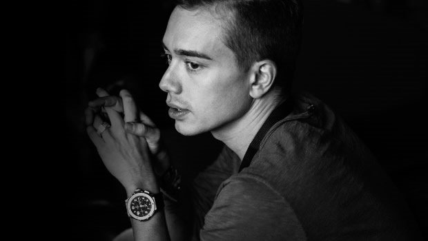

Headhunterz EDM evolution: “I now live between worlds”

Picture the final hours of Q-dance’s colossal Defqon.1 Festival in Amsterdam. The mainstage is a menacing structure built entirely from garbage and metal scraps, somehow increasing exponentially in stature as the sun goes down to become a sinister skyscraper towering over the crowd. Fire and smoke are spewed into the air, spectacular lasers shooting over the crowd.
For years Willem Rebergen AKA Headhunterz was one of the hardstyle scene’s reigning DJ/producers, headlining many of these spectacular events. However, there was a dissatisfaction brewing with being, as he puts it himself, “on top of the mountain defending my spot.” His tendency to experiment with hardstyle in the studio eventually drew him to the more accessible sounds of EDM that could be found on the mainstage.
In 2012 Headhunterz performed at the very first Q-dance stage at the Vegas edition of Electric Daisy Carnival, one of the first major incursions of hardstyle onto US soil. However, by the following year he was performing on the EDC mainstage. That same year he also signed with Ultra Records, which had recently became part of Sony Music; right at the end Headhunterz unleashed his collaboration with Krewella titled ‘United Kids of the World’; the next stage of his artistic evolution that now sees him now living “between worlds” of EDM and hardstyle.
And so it has progressed in 2014. When Data Transmission caught up with Headhunterz on his home turf at Amsterdam Dance Event (ADE) last month, we started by asking about his recent collaborations with fellow Dutchmen and mainstage performers W&W, who he collaborated with on two singles this year; ‘Shocker’ a few months ago, plus the recent ‘We Control the Sound’. With W&W themselves rising from the trance scene, there are some definite parallels.
There’s a similar career trajectory for Headhunterz and W&W. You both brought elements of your different scenes with you.
I think with both acts, in terms of our personalities we’re both pretty different, but we’re definitely walking a similar path. They obviously come from the trance scene, and they also made the decision to break free from the expectations of that scene. That requires a lot of courage. I’m going through something similar, where I’m reclaiming my creative freedom. That definitely got us really inspired when we worked with each other, it got the conversation going. We had been fans of each other’s sound for quite a while, which is something that we didn’t even know.
We actually bumped into each other in Canada while we were on tour, and we immediately decided to collaborate with each other. And it’s actually a double collaboration. There was ‘Shocker’ earlier this year, and then there is the one coming out that is called ‘We Control The Sound’, which for me is the best of the two, and for W&W too I think. It definitely shows our different musical sides coming together in a really cool way.

For so long you were positioned in such a high place in the hardstyle scene. Did it take a lot of guts to break free of those expectations?
Yes absolutely. After all these years into your career, you build up certainty and you build up your fanbase. It definitely takes courage to say, I’m willing to sacrifice what I have now, and start all over again new if that would be necessary. But not that it necessarily would be the case, as there are also probably a lot of people in the phase of their lives where they’re ready to move onto something new, and these are the people will keep on being interested in what I’m doing in the future. But you are definitely required to surrender to that possibility. And you need time to build momentum, and to build the courage to actually take that step.
The hardstyle scene has very specific expectations, and even when you were part of that scene you were making people angry because you defied their expectations.
Definitely. The hardstyle crowd is very dedicated, the style is their lifestyle. They identify with it, it’s part of them. So they feel that I am responsible for representing their style. As soon as I start to mould that into something new, they definitely feel like I’m fiddling around with part of what is theirs. But obviously I don’t want to feel limited like that. I started making music back in the day being guided simply by what I enjoyed doing, and not to please anyone. And that’s how it should be. That’s art. Art comes from within and it goes out, and not the other way around. It takes a lot of self-reflection to really come to that conclusion, and to really gain the power to actually act from within, and not let the outside opinions and projections get you off your path.
So where do you see yourself as an artist now?
Where do I see myself? I live between worlds. I’m actually in a very grey area at the moment, but it’s a very exciting place to be, because I’d been living with certainty for the last couple of years in my career, and that’s actually something that to be honest doesn’t suit me. Because when I look back on my career, the early stage is when I felt the most excited, during the time when I was completely unsure of what was going to happen. That is what triggered me creatively. Obviously to regain that creative flow, I had to recreate a similar situation where I would not be on top of the mountain defending my spot, but instead be in a position where I’d be able to look up to certain producers again, to be uncertain of what is going to happen. This really makes me feel free, and to have dreams again.
Are you happy to stay between the two worlds?
Oh yeah. It’s inevitable that people are gonna put labels on you again. Right now people don’t know what to make of it, but it’s inevitable. Over the years I learned more and more to deal with that, and I’ve tried not to label myself so much again as I have done in the past. Because I’ve obviously identified myself with hardstyle in the past, but I will try to keep that more open.
Headhunterz collaborative effort with fellow EDM converts W&W is out now. Check out a preview of it below.
Words: Angus Thomas Patterson Photos: Simone Van Engelen